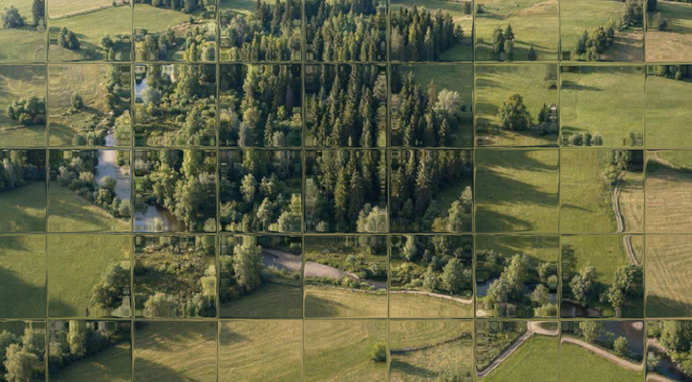

Killuke metsa

Muutuv protsess
Julgeks väita, killuke metsa on kõigi eestlaste südameis kanda
kinnitanud ühel või teisel moel, kas mälestustes lapsepõlve radadel
või igapäevastes toimetustes tänases päevas.
Samamoodi on ka lood siinse kirjutise autoril, kellel tekkis tungiv
soov avada ja jagada oma mõtteid sellel killukesel. Siinse lehe
eesmärk on eelkõige leida vastuseid ja seoseid iseendas läbi
protsessi või läbi „minemise”.
Nagu metski, mis pidevas muutumises terviklik süsteem, püüan siin
kokku koguda kilde, mis annaks tervikpildi, tehes pidevalt
parandusi, muudatusi. Sisu osas leiab viiteid seadustele ja
määrustele, mis reguleerivad ja kujundavad tegevust metsas, nii
looduskaitselisest kui metsamajanduslikust aspektist.
Teisest küljest on selle lehe eesmärk leida ikkagi see konks, mis
haagiks inimest metsa ja looduse külge üldiselt, ehk siis täiesti
reguleerimata, subjektiivne arvamus. Sissejuhatuse kokkuvõtteks võib
öelda: „Mine metsa”, see tasub ära.
Mis on mets?
Mis või kes on mets?
Galerii
Pilte maalt ja metsast
Metsa mõõtmisest
Siin on valik võimalusi metsa mahu määramiseks. Lühike sissevaaade
metsa takseerimisse: terminid ja vajalikud sisendid mahtude
määramisel
Seadused metsas ja Metsaseadused
Metsal on omad seadused ja loodusel omad seadused. Nii on lood ka
inimestel, kes on loonud regulatsioonid metsas ja looduses
toimetamiseks. Siin on viited metsa ja looduskaitse seadustele ning
subjektiivsed tähelepanekud ja mõtted nendele teemadel
Huvitavat teadusmaailmast
Suhtlevad taimed, co2 mõjud jne.
Kas tohib avaldada arvamusi?
Kas tohib avaldada arvamusi on lõik metsandusest ja loodusest, mis
peaks leidma uudseid lähenemisi ja vaateid. Väljuma täielikult
numbrite ja regulatsioonide "orbiidilt" ning tegema ilusa kokkuvõtte
sellest keskkonnast kus me elame ja kuhu me tahame välja jõuda.